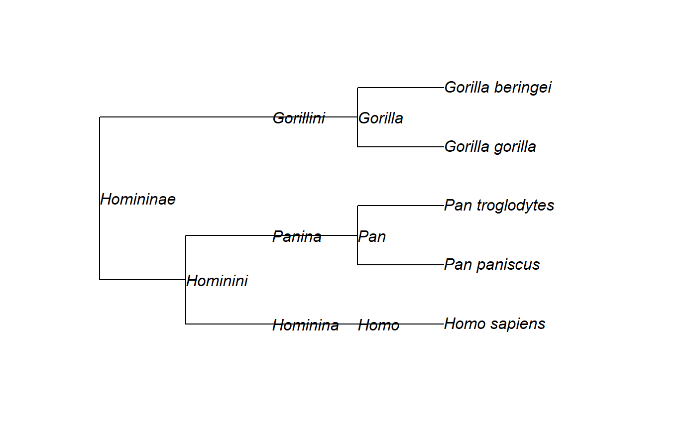
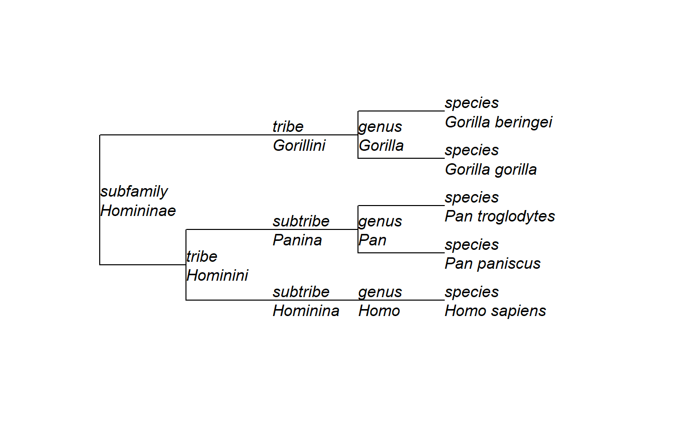

read_nwka_tree.RdThis function reads a file containing one or more trees in Newick-with-Attributes (NWKA) format.
read_nwka_tree( file = "", text = NULL, tree.names = NULL, keep.multi = FALSE, debug = FALSE )
| file | A file name. |
|---|---|
| text | A variable of mode character containing the tree(s) to parse. By default, this is set to |
| tree.names | A vector of mode character containing names for the trees that are read from the file;
if |
| keep.multi | If |
| debug | A logical value indicating whether to enable verbose debug output while parsing the tree. If this is |
An object of class "phylo" or "multiPhylo", compatible with the ape
package.
In addition to the elements described in the documentation for the read.tree
function of the ape package, a "phylo" object produced by this function
will also have the following components:
tip.attributesA named list of attributes for the tips of the tree. Each element of this list is a vector of mode character or numeric (depending on the attribute).
node.attributesA named list of attributes for the internal nodes of the tree. Each element of this list is a vector of mode character or numeric (depending on the attribute).
The Newick-with-Attributes format parsed by this function is backwards compatible with the Newick/New Hampshire format and some of its extensions (e.g. Extended Newick, New Hampshire X).
Node attributes (e.g. support values, rates, ages...) are parsed by this function and returned in the
tip.attributes and node.attributes elements of the returned "phylo" objects. If the nodes
contain a prob attribute, its value will also be copied to the Support attribute.
Attribute names may appear in any kind of casing (e.g. Name, name or NAME), but they
should be treated using case-insensitive comparisons.
Setting the debug argument to TRUE can be useful when analysing malformed trees (to understand
at which point in the tree the problem lies).
https://github.com/arklumpus/TreeNode/blob/master/NWKA.md
Other functions to read trees:
read_binary_trees(),
read_nwka_nexus(),
read_one_binary_tree()
# Parse a tree string # Topology from https://www.ncbi.nlm.nih.gov/Taxonomy/Browser/wwwtax.cgi?id=207598 tree <- read_nwka_tree(text="(((('Homo sapiens'[rank=species])'Homo'[rank=genus]) 'Hominina'[rank=subtribe],(('Pan paniscus'[rank=species],'Pan troglodytes' [rank=species])'Pan'[rank=genus])'Panina'[rank=subtribe])'Hominini'[rank=tribe], (('Gorilla gorilla'[rank=species],'Gorilla beringei'[rank=species])'Gorilla' [rank=genus])'Gorillini'[rank=tribe])'Homininae'[rank=subfamily];") # Show the tree's structure str(tree)#> List of 6 #> $ Nnode : int 8 #> $ tip.label : chr [1:5] "Homo sapiens" "Pan paniscus" "Pan troglodytes" "Gorilla gorilla" ... #> $ tip.attributes :List of 2 #> ..$ Name: chr [1:5] "Homo sapiens" "Pan paniscus" "Pan troglodytes" "Gorilla gorilla" ... #> ..$ rank: chr [1:5] "species" "species" "species" "species" ... #> $ node.attributes:List of 2 #> ..$ Name: chr [1:8] "Homininae" "Hominini" "Hominina" "Homo" ... #> ..$ rank: chr [1:8] "subfamily" "tribe" "subtribe" "genus" ... #> $ edge : int [1:12, 1:2] 6 7 8 9 7 10 11 11 6 12 ... #> $ node.label : chr [1:8] "Homininae" "Hominini" "Hominina" "Homo" ... #> - attr(*, "class")= chr "phylo" #> - attr(*, "order")= chr "cladewise"# Add taxonomic rank (stored in the "rank" attribute of the tree) tree$tip.label = paste(tree$tip.attributes$rank, tree$tip.attributes$Name, sep="\n") tree$node.label = paste(tree$node.attributes$rank, tree$node.attributes$Name, sep="\n") # Plot again ape::plot.phylo(tree, show.node.label = TRUE, node.depth = 2, y.lim=c(0.5, 5.5))